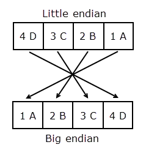

swapbytes
Swap byte ordering
Syntax
Description
Examples
Swap the byte ordering for a scalar 32-bit value. Use hexadecimal representation to show the conversion from little endian to big endian.
X = uint32(hex2dec('4D3C2B1A'));
Y = dec2hex(swapbytes(X))Y = '1A2B3C4D'
Starting in R2019b, you can also write a hexadecimal value as a literal using the 0x or 0X prefix (for more information, see Hexadecimal and Binary Values). Specify the number X as a hexadecimal literal. Swap the byte ordering.
X = 0x4D3C2B1A; Y = dec2hex(swapbytes(X))
Y = '1A2B3C4D'
Swap the byte ordering for each element of a 1-by-4 vector.
format short
X = uint16([0 1 128 65535])X = 1×4 uint16 row vector
0 1 128 65535
Y = swapbytes(X)
Y = 1×4 uint16 row vector
0 256 32768 65535
Examine the output in hexadecimal notation to show the endian conversion.
format hex
XX = 1×4 uint16 row vector
0000 0001 0080 ffff
Y
Y = 1×4 uint16 row vector
0000 0100 8000 ffff
Create a three-dimensional array A of 16-bit integers. Swap the byte ordering of each element. Use hexadecimal representation to show the endian conversion.
format hex
X = uint16(magic(3)*150);
X(:,:,2) = X*40;
XX = 3×3×2 uint16 array
X(:,:,1) =
04b0 0096 0384
01c2 02ee 041a
0258 0546 012c
X(:,:,2) =
bb80 1770 8ca0
4650 7530 a410
5dc0 d2f0 2ee0
Y = swapbytes(X)
Y = 3×3×2 uint16 array
Y(:,:,1) =
b004 9600 8403
c201 ee02 1a04
5802 4605 2c01
Y(:,:,2) =
80bb 7017 a08c
5046 3075 10a4
c05d f0d2 e02e
Input Arguments
Numeric value, specified as a scalar, vector, matrix, or multidimensional array. The
swapbytes operation is elementwise when X is
nonscalar.
Data Types: single | double | int8 | int16 | int32 | int64 | uint8 | uint16 | uint32 | uint64
More About
Computer systems store data in pieces of bytes. There are two ways to
store a numeric value in computer memory: little endian and big endian. In little-endian
style, the bytes are written from left to right in increasing significance. In big-endian
style, the bytes are written from left to right in decreasing significance. The
swapbytes function swaps the byte ordering in memory, converting little
endian to big endian (and vice versa).
The following figure illustrates the conversion for a 32-bit (4-byte)
hexadecimal number, 4D3C2B1A. In hexadecimal notation, one byte is represented by two
digits. Each box in the little-endian picture shows one byte of data (4D, 3C, 2B, and 1A).
The swapbytes function swaps the order of these boxes or bytes.

Extended Capabilities
The
swapbytes function fully supports tall arrays. For more information,
see Tall Arrays.
Usage notes and limitations:
Inheritance of the class of the input to swapbytes in a
MATLAB Function block is supported only when the class of the input is
double. For non-double inputs, the input port data types must be
specified, not inherited.
Usage notes and limitations:
Inheritance of the class of the input to swapbytes in a
MATLAB Function block is supported only when the class of the input is
double. For non-double inputs, the input port data types must be
specified, not inherited.
This function fully supports thread-based environments. For more information, see Run MATLAB Functions in Thread-Based Environment.
The swapbytes function
fully supports GPU arrays. To run the function on a GPU, specify the input data as a gpuArray (Parallel Computing Toolbox). For more information, see Run MATLAB Functions on a GPU (Parallel Computing Toolbox).
This function fully supports distributed arrays. For more information, see Run MATLAB Functions with Distributed Arrays (Parallel Computing Toolbox).
Version History
Introduced before R2006a